The first half of this project is about filters in the image domain: writing convolution by hand, then using finite differences and Gaussians to find edges. The second half moves to frequencies. A Gaussian keeps the low frequencies and the image minus its blur keeps the high ones, and those two pieces are enough to sharpen photos, build images that change with viewing distance, and blend two photos without a visible seam.
01
Convolution from scratch
Both versions flip the kernel, zero-pad the image by k−1 on every side, compute the full output and crop it. For same, the window starts at (k−1)//2, which is where scipy puts it. With an even kernel like the two-tap D_x, a centred crop would be off by one pixel.
def pad_zeros(img, kh, kw):
H, W = img.shape
out = np.zeros((H + 2 * (kh - 1), W + 2 * (kw - 1)))
out[kh - 1:kh - 1 + H, kw - 1:kw - 1 + W] = img
return out
def crop_mode(full, img_shape, k_shape, mode):
(H, W), (kh, kw) = img_shape, k_shape
if mode == "full":
return full
r0, c0 = (kh - 1) // 2, (kw - 1) // 2 # "same", as scipy centres it
return full[r0:r0 + H, c0:c0 + W]
def conv_four_loops(img, kernel, mode="same"):
k = np.flipud(np.fliplr(kernel)) # convolution, not correlation
kh, kw = k.shape
padded = pad_zeros(img, kh, kw)
full = np.zeros((padded.shape[0] - kh + 1, padded.shape[1] - kw + 1))
for i in range(full.shape[0]):
for j in range(full.shape[1]):
acc = 0.0
for u in range(kh):
for v in range(kw):
acc += k[u, v] * padded[i + u, j + v]
full[i, j] = acc
return crop_mode(full, img.shape, (kh, kw), mode)
def conv_two_loops(img, kernel, mode="same"):
k = np.flipud(np.fliplr(kernel))
kh, kw = k.shape
padded = pad_zeros(img, kh, kw)
full = np.zeros((padded.shape[0] - kh + 1, padded.shape[1] - kw + 1))
for i in range(full.shape[0]):
for j in range(full.shape[1]):
full[i, j] = np.sum(padded[i:i + kh, j:j + kw] * k)
return crop_mode(full, img.shape, (kh, kw), mode)I checked both against scipy.signal.convolve2d on my portrait, downscaled to 300 × 225. The box filter and the difference operators are symmetric or antisymmetric, so they would hide a missing flip; a random 5 × 3 kernel catches it.
| Kernel | Max diff, 4 loops | Max diff, 2 loops | 4 loops | 2 loops | scipy |
|---|---|---|---|---|---|
| Box 9 × 9 | 8.9e-16 | 4.4e-16 | 1.26 s | 0.19 s | 6.6 ms |
| Dx | 0 | 0 | 0.04 s | 0.16 s | 0.6 ms |
| Dy | 0 | 0 | 0.05 s | 0.17 s | 0.9 ms |
| Random 5 × 3 | 2.2e-15 | 1.8e-15 | 0.25 s | 0.17 s | 2.2 ms |
Mode same; full gives the same differences. Timings from one run.
Both match scipy to rounding error. Two loops beat four on the box filter (81 multiplies per pixel move into numpy), but lose on the two-tap operators, where one numpy call per pixel costs more than two Python iterations. Scipy is 30 to 300 times faster than either.
Fig. 01 · My portrait, a 9 × 9 box filter, and the two difference operators
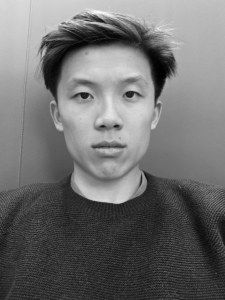
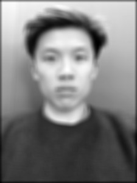
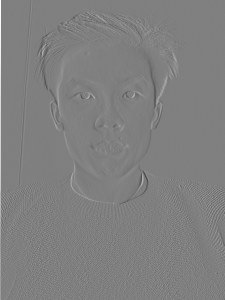
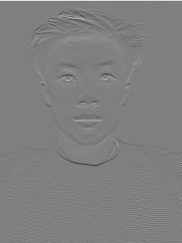
In the derivatives mid-grey is zero. D_x picks out the sides of my face, ears and neck; D_y picks out the eyebrows, eyes, lips and the neckline, and the horizontal knit rows of the sweater.
02
Finite difference operator
Convolving the cameraman with D_x = [1, −1] and its transpose gives the two partial derivatives. The gradient magnitude combines them, and a threshold turns it into an edge map.
Fig. 02 · Partial derivatives, magnitude and edges
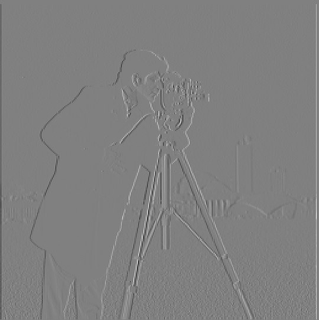
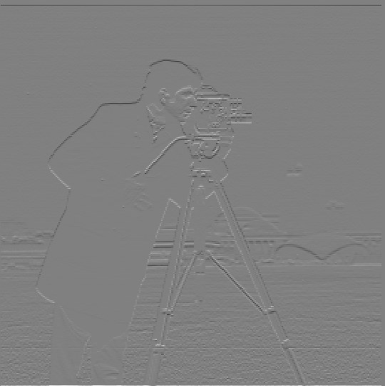
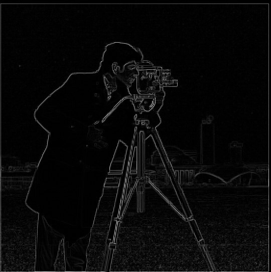
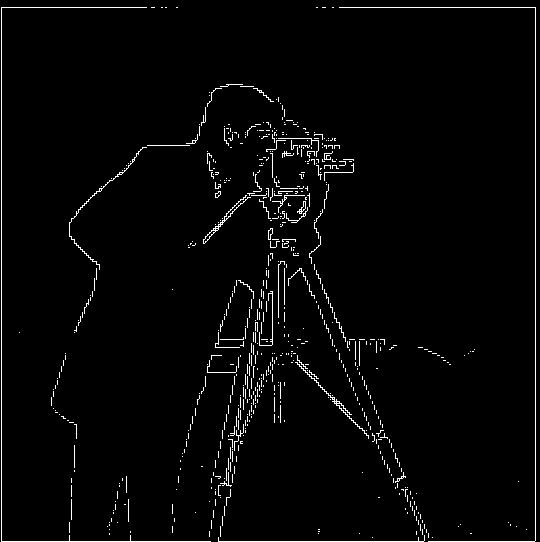
Fig. 03 · Choosing the threshold
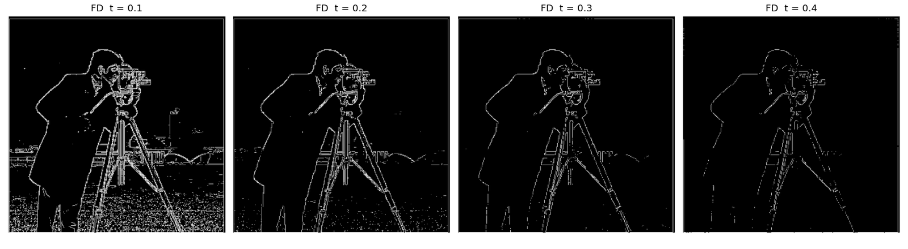
At 0.10 the grass becomes white speckle; at 0.40 the tripod legs and the back of the coat break apart. I chose t = 0.30, the lowest value where the grass mostly disappears (2.5% of pixels marked as edge). The thin frame is real: this copy of the image has a one-pixel white border.
03
Derivative of Gaussian
The grass noise is high frequency, so blurring first should remove it. I built a 13 × 13 Gaussian with σ = 2 as the outer product of cv2.getGaussianKernel with itself, blurred the image, and repeated 1.2. Then I did it the other way round: convolve G with D_x and D_y once to get derivative of Gaussian filters, and apply those to the original.
Fig. 04 · Blur, then differentiate
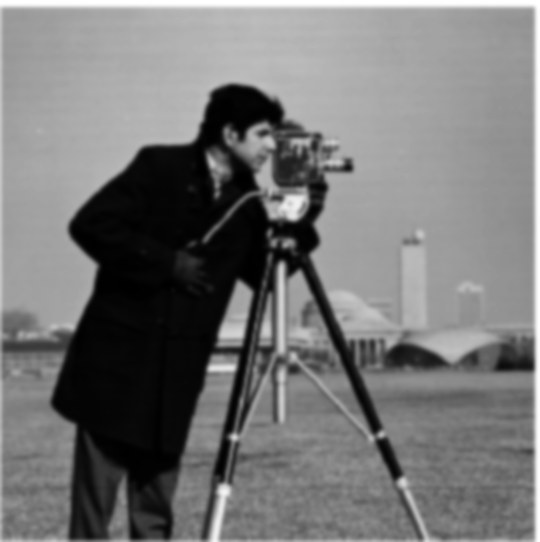
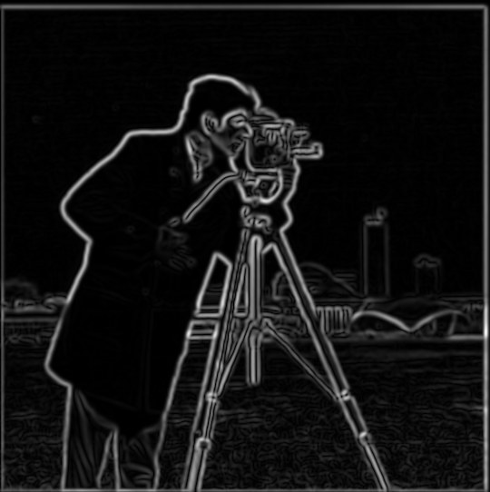
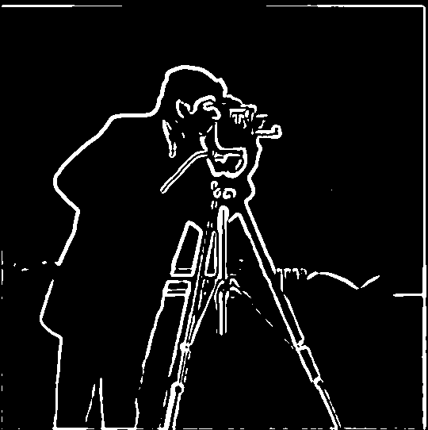
Fig. 05 · The DoG filters, and one filter vs two steps
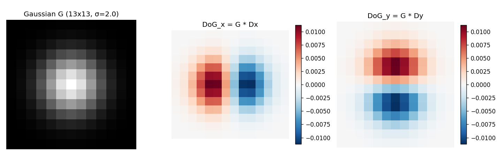
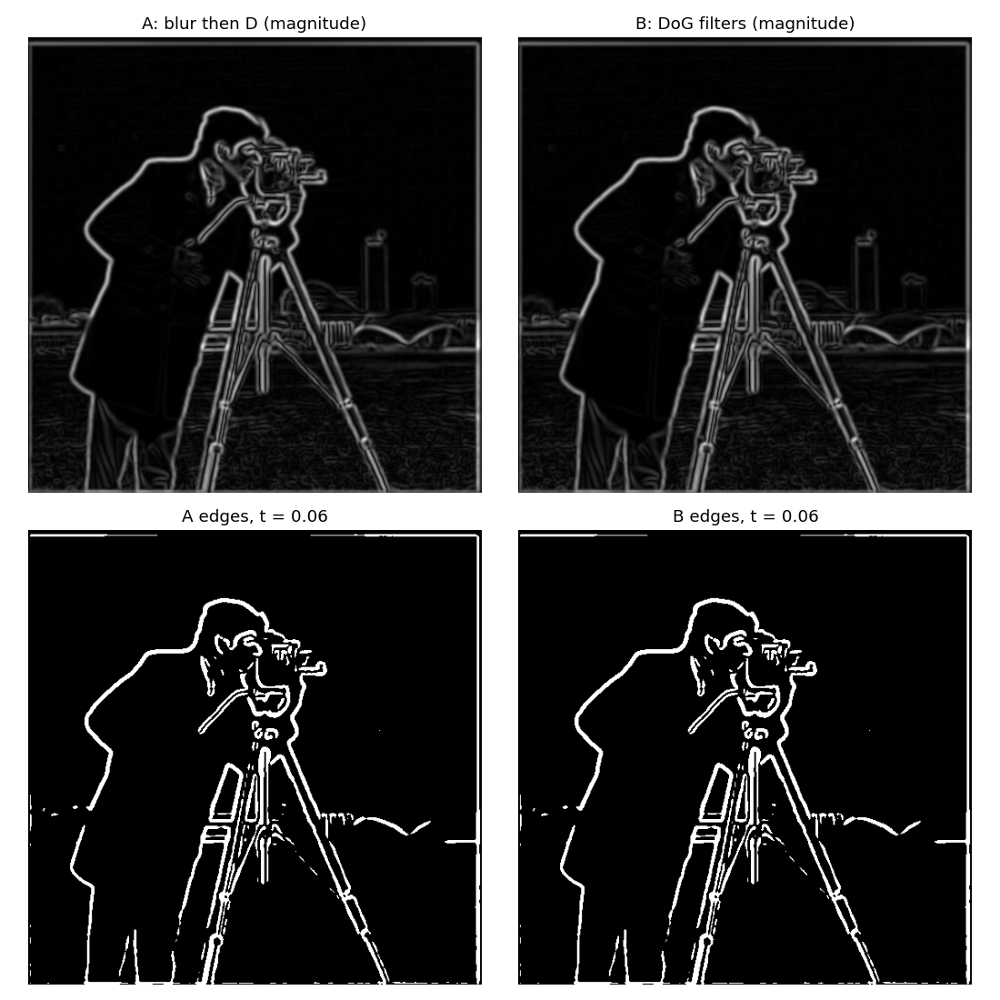
Convolution is associative, so both routes agree to floating point rounding (ignoring the border, where they pad differently).
Fig. 06 · Threshold for the smoothed gradient
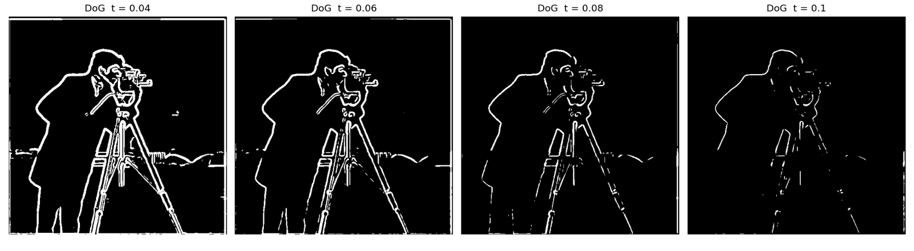
What changed
- Less noise. Relative to each map's maximum, finite differences at 21% still leave grass noise; the DoG at 22% leaves the grass clean.
- Thicker, continuous edges. Outlines are several pixels wide and run unbroken around the head, shoulder and tripod, where 1.2 was ragged.
- Fine detail is lost. The camera's knobs and the thin lines of the distant buildings are weaker or gone.
- Lower threshold. Blurring spreads each edge, so the magnitudes shrink (max 0.95 to 0.18) and t drops from 0.30 to 0.06.
04
Gradient orientation
Bells and whistles. From the DoG gradients I computed θ = arctan2(−∂y, ∂x); the minus sign makes θ = π/2 point up. Orientation wraps around, so it needs a cyclic colour map. In the HSV version the hue is θ and the brightness is the gradient magnitude, which hides the flat areas where θ is meaningless.
Fig. 07 · Orientation, alone and weighted by strength
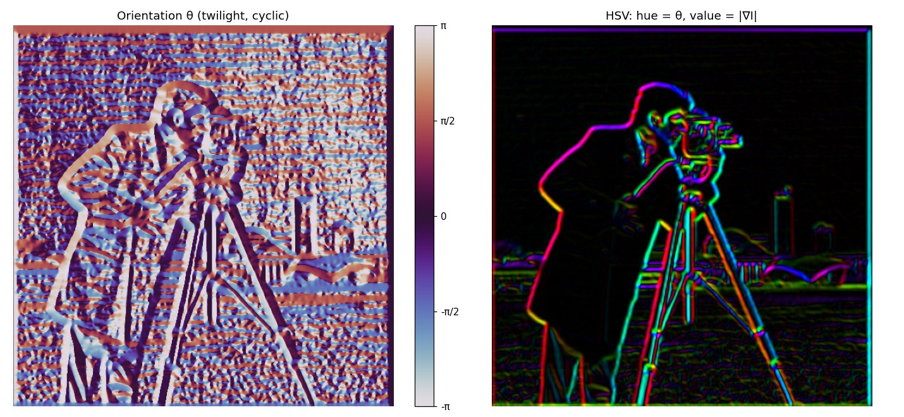
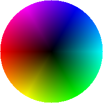
The two sides of each tripod leg come out in opposite colours, because the gradient points from dark to bright and flips across a thin dark bar. Along the back of the coat the hue drifts from magenta to yellow as the outline curves.
05
Sharpening
A Gaussian keeps the low frequencies, so f − f * G is the high frequencies. Adding more of them back makes an image look sharper, and because convolution is linear the whole thing is one filter, the unsharp mask:
It is a tall centre tap with a shallow negative Gaussian around it, summing to 1, so flat regions are untouched. With G at 13 × 13, σ = 2, the single filter matches the two-step version to 1.8e-15.
Fig. 08 · The unsharp mask filter
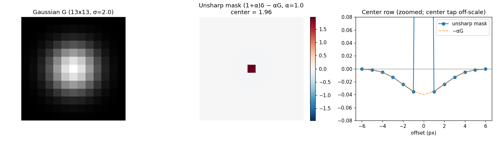
Fig. 09 · Taj Mahal: original and sharpened
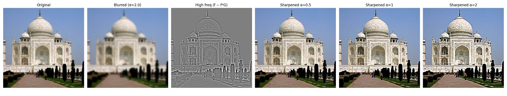
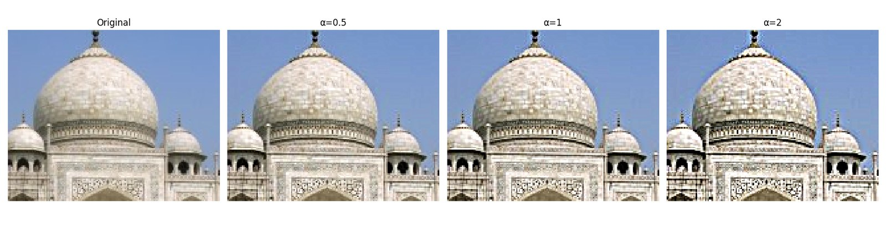
At α = 0.5 and 1 the marble and the carvings above the arch get crisper without looking processed. At α = 2 the filter overshoots on both sides of every edge: the dome gets a bright rim, the sky next to it a dark band, and the JPEG noise is amplified too. α = 1 looks best.
Fig. 10 · A photo of my own: the windmill
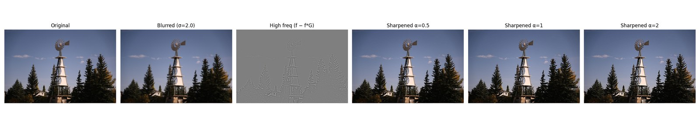
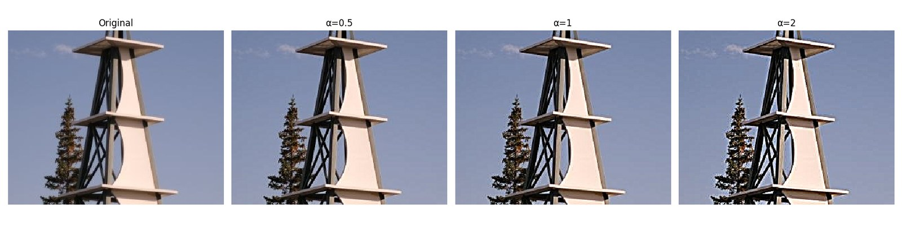
Blur a sharp photo, then sharpen it back
To evaluate the method I blurred the windmill with the same Gaussian and ran the unsharp mask on the blurred copy.
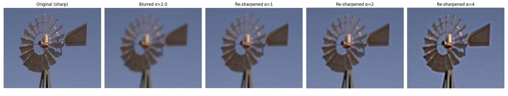
| Image | PSNR vs original |
|---|---|
| Blurred | 28.29 dB |
| Re-sharpened, α = 1 | 29.79 dB |
| Re-sharpened, α = 2 | 30.51 dB |
| Re-sharpened, α = 4 | 28.95 dB |
Sharpening moves the image back toward the original, but only partway: PSNR peaks at α = 2, then drops as overshoot costs more than it recovers. The blades separate again and the tail vane gets a firm outline, but the thin rim, the spokes and the hub stay smeared, and at α = 4 a dark ring appears in the sky around the wheel. The blur removed the finest frequencies outright. Unsharp masking can only amplify what the blur weakened, so it makes surviving edges look sharper but cannot bring back lost detail.
06
Hybrid images
A hybrid image (Oliva, Torralba and Schyns, 2006) adds the low frequencies of one image to the high frequencies of another. Up close the fine detail dominates; from far away, or small, only the low frequencies are left. The low-pass is a Gaussian, the high-pass is the impulse minus a Gaussian, and I scale the high-pass by a gain k when one image has much more contrast than the other.
def hybrid_image(im_high, im_low, sigma_high, sigma_low, high_gain=1.0):
high = high_gain * (im_high - blur(im_high, sigma_high)) # (delta - G)
low = blur(im_low, sigma_low) # G
return low + highI use the frequency where each Gaussian's response falls to one half as its cutoff. Images are aligned on two points with the provided code, which I changed to accept saved points, and then cropped to the region where both aligned images have real pixels, so padding and rotation edges don't turn into bright lines.
Anne Hathaway up close, Girl with a Pearl Earring from afar
Both look back over a shoulder with the head tilted the same way. The photo of Anne is tiny (250 × 333, eyes 34 pixels apart) and she supplies the high frequencies, so I only upscaled her 2× for display and scaled the painting by 0.607 to match. I aligned on the centres of the irises.
Fig. 11 · Inputs, aligned, and a 50/50 overlay
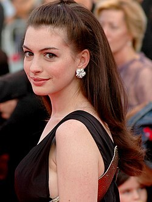
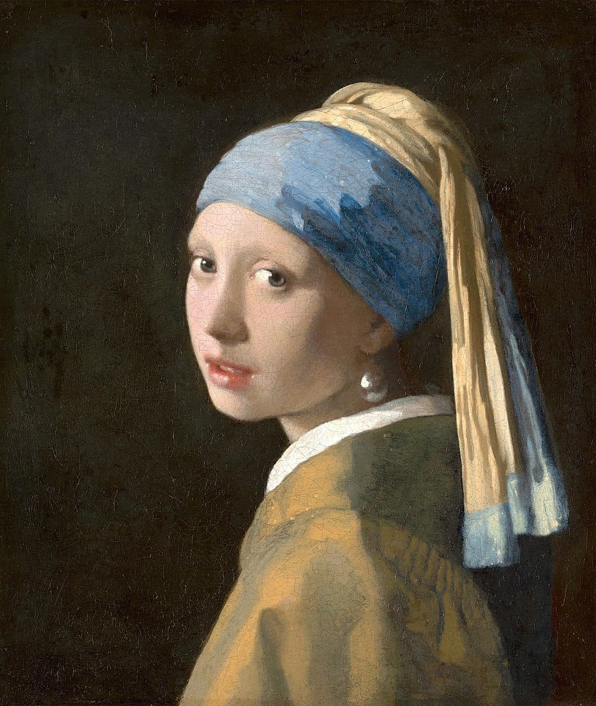
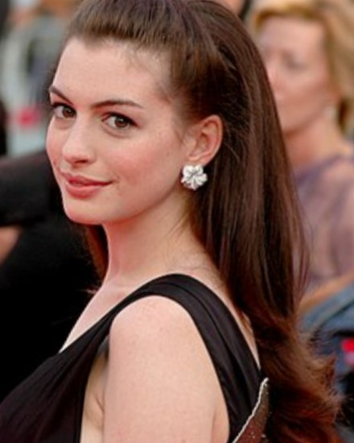
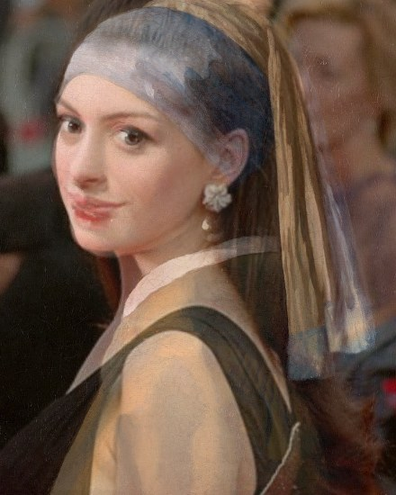
Fig. 12 · Choosing the cutoffs
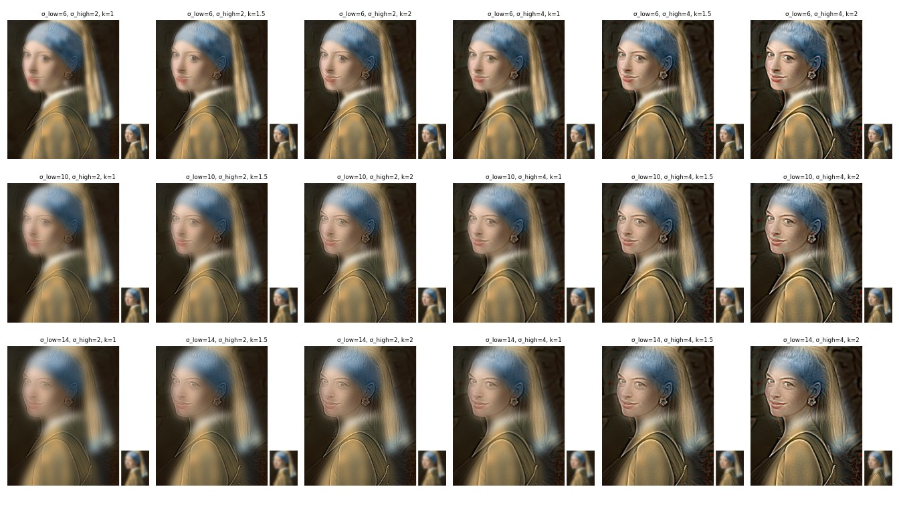
With σhigh = 2 only eyelashes and hair strands survive and Anne looks ghostly; σhigh = 4 brings in the shape of her eyes and smile. σlow = 6 leaves the girl's features sharp enough to compete. The far view reads as the painting in every cell, so there was room to boost Anne, but k = 2 adds halos along her jaw. I chose σhigh = 4 (cutoff 0.047), σlow = 10 (cutoff 0.019) and k = 1.5.
Fig. 13 · Filtered components and filter responses
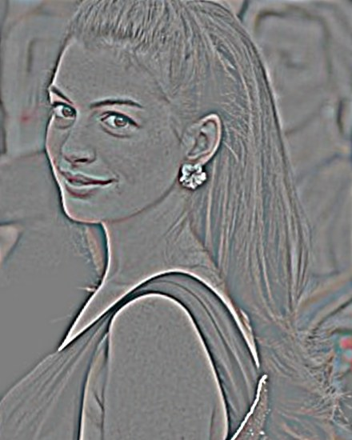
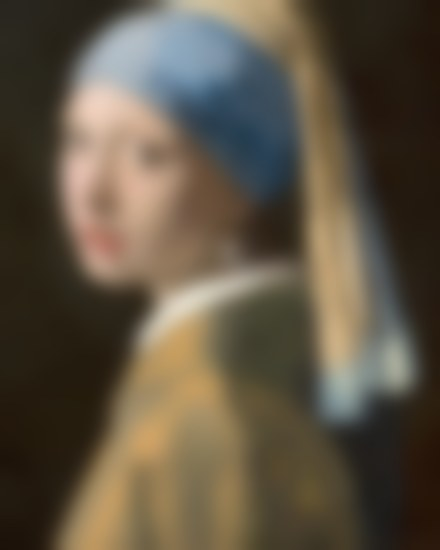
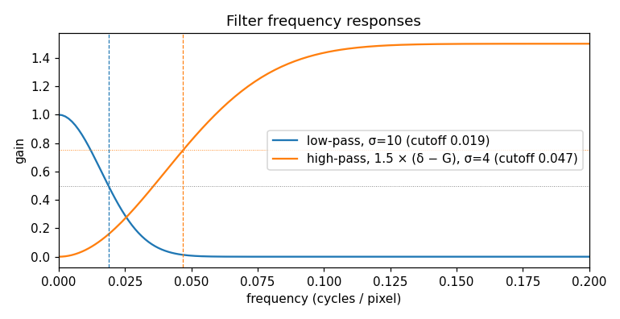
Fig. 14 · The process in the frequency domain
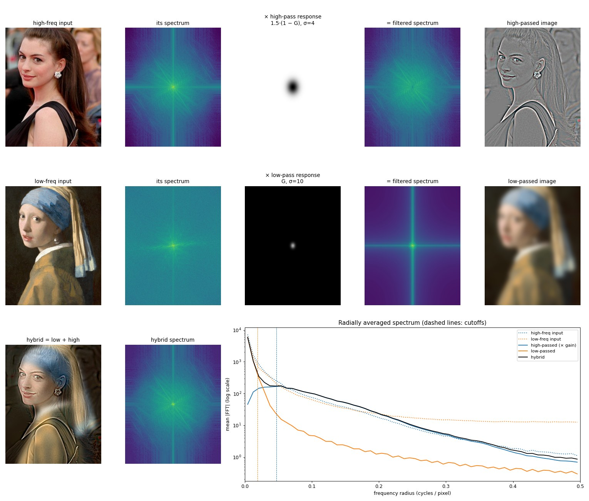
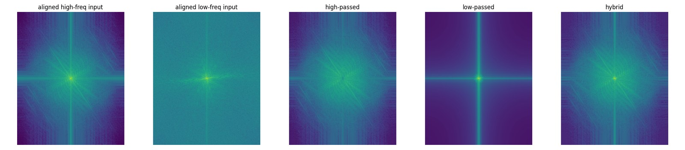
Filtering multiplies the spectrum by the filter's response. The high-pass is a small dark hole in a flat field, so Anne's spectrum survives almost whole apart from its bright centre. The low-pass is a small bright spot, so almost all of the painting's spectrum goes dark; the bright cross that remains comes from the image borders, which the FFT treats as periodic. The hybrid takes its centre from the painting and everything else from Anne.
The radial plot makes the handoff measurable. Below the painting's cutoff, 99.8% of the hybrid's spectral energy comes from the painting; above Anne's, 97% comes from Anne; between the two they share it, 37 / 63. The filtered curves cross at about 0.025 cycles per pixel, a period of about 40 pixels, roughly one eye. So anything eye-sized or smaller comes from Anne, and anything head-sized or larger (the turban, the jacket, the lighting) from the painting. Anne's two other features in the spectrum: a dark outer border, because her 2× upscale has nothing above 0.25 cycles per pixel, and a diagonal streak from the long edge of her shoulder strap.
Fig. 15 · The hybrid at full size, then stepping back
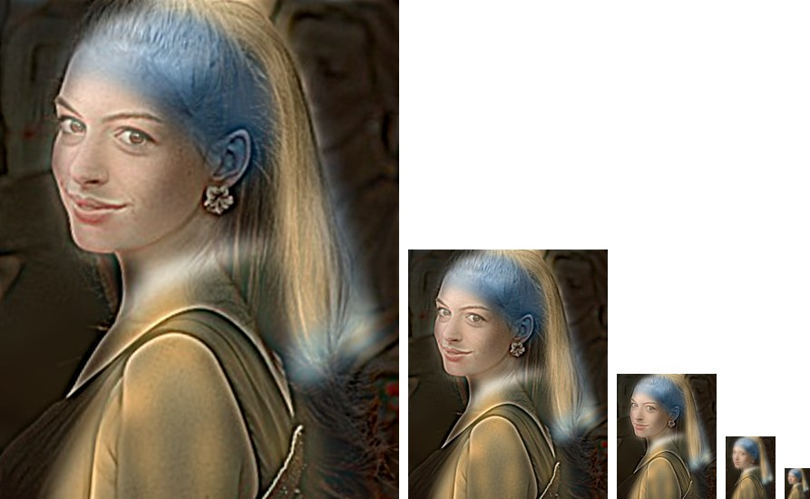
Full and half size read as Anne, with the turban and jacket as soft colour that looks more like lighting. At a quarter the painting takes over, and at 1/8 it is only the painting. Shrinking 8× pushes Anne's band up near the pixel grid's limit, where downsampling removes it. Weak spots: her hair lies over the turban's yellow cloth, her dress strap draws a line across the jacket, and the busy background of the photo shows faintly on the right.
Agent P up close, Perry the Platypus from afar
Two cartoons of the same character, where the fedora only appears when you look closely. I aligned on the beak (its left corner and tip, found by thresholding the orange), scaled Perry by 0.61, put his transparent background on Agent P's backdrop colour so the added detail doesn't clip against white, and padded him so the hat isn't cropped. Agent P's outlines are thin, so he needed σhigh = 6 and k = 2; Perry uses σlow = 12.
Fig. 16 · Agent P and Perry, and the hybrid stepping back
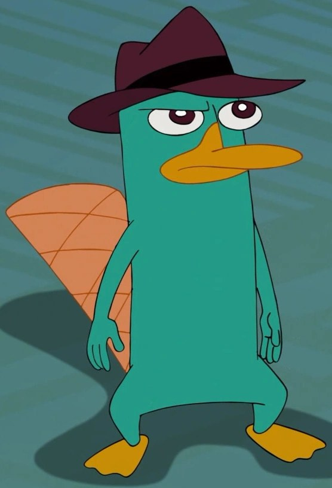
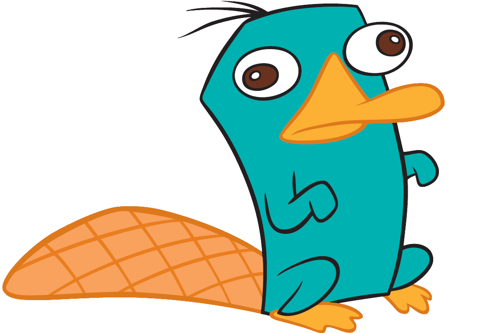
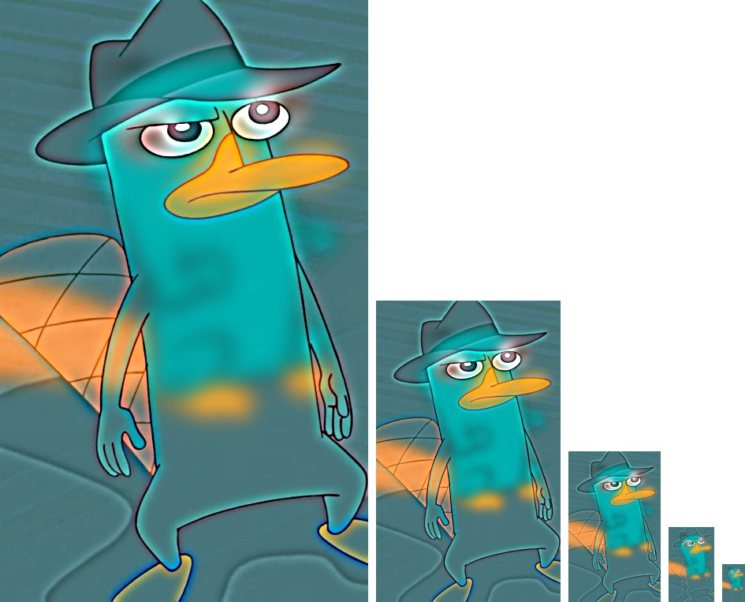
Up close it is Agent P: hat, narrowed eyes, long legs. At a quarter size the two compete, and by 1/8 it is plain Perry, a bright teal body with the beak and tail. The light glow along the outlines is high-pass ringing, made stronger by the gain.
Warm-up: Derek and Nutmeg
I tested the pipeline on the provided pair first, with the cat's whiskers as the high frequencies (σ = 3) and Derek as the low (σ = 8). My first try, σ = 6 and 10, let the cat take over at every size.
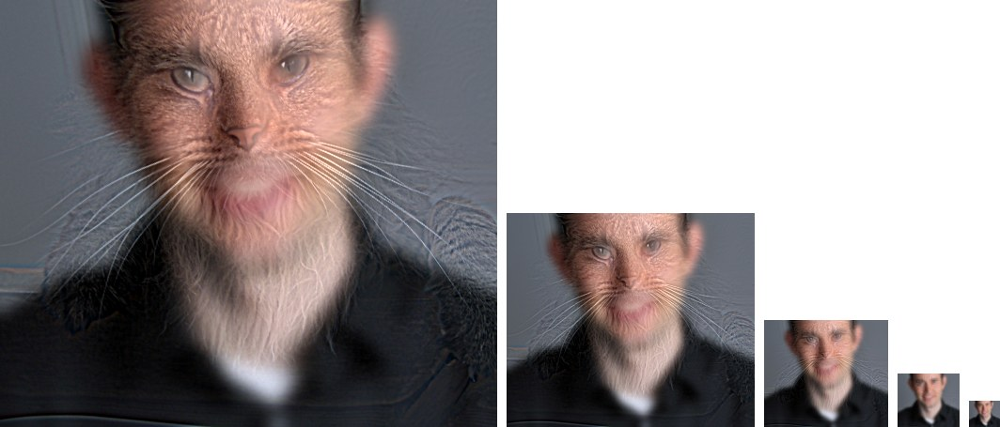
Bells and whistles: colour
I rebuilt the Anne hybrid with each component in colour or in grey.
Fig. 17 · Which half needs colour
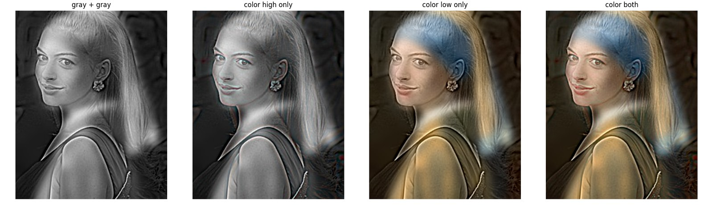
Colour matters on the low-frequency side. The painting is recognised by its blue turban and golden jacket; in grey, the far view is just a black and white photo of Anne. Colour on the high frequencies only adds a touch of red to her lips and faint fringes, so "colour low" and "colour both" look nearly the same. The Derek pair shows the same pattern: fur and whiskers are brightness edges with almost no hue of their own.
07
Gaussian and Laplacian stacks
A stack is a pyramid without the downsampling, so the blur has to grow instead. Level i blurs level i−1 with σ = 2 · 2i−1; since blurs add in quadrature, the total blur is about 2, 4.5, 9.2, 18.4 and 36.9, roughly doubling like a pyramid. Each Laplacian level is the difference of neighbouring Gaussian levels, and the last keeps the blurriest Gaussian so the stack sums back to the image (error 1.1e-16). No built-in pyramid functions.
def gaussian_stack(im, levels=6, sigma0=2.0):
stack = [im]
for i in range(1, levels):
stack.append(blur(stack[-1], sigma0 * 2 ** (i - 1)))
return stack
def laplacian_stack(im, levels=6, sigma0=2.0):
G = gaussian_stack(im, levels, sigma0)
return [G[i] - G[i + 1] for i in range(levels - 1)] + [G[-1]]Fig. 18 · Stacks of the apple and the orange
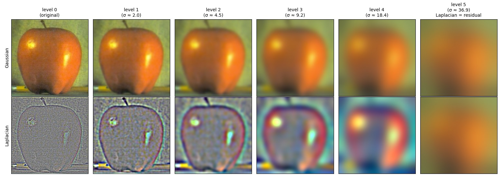
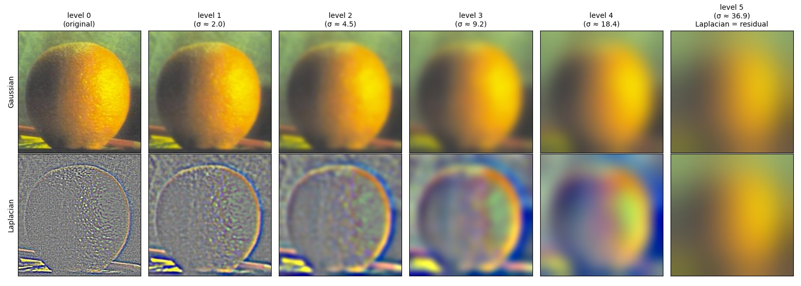
To blend, each Laplacian level is mixed with the matching level of a blurred mask, then the levels are summed. Fine texture switches sides almost at once, while colour and brightness fade over a wide band.
Fig. 19 · The mask's Gaussian stack
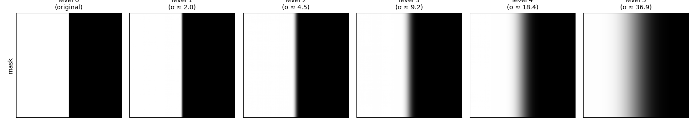
Fig. 20 · Hard seam, the oraple, and Szeliski Figure 3.42 recreated
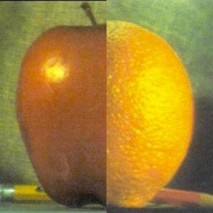
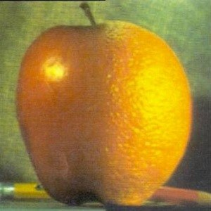
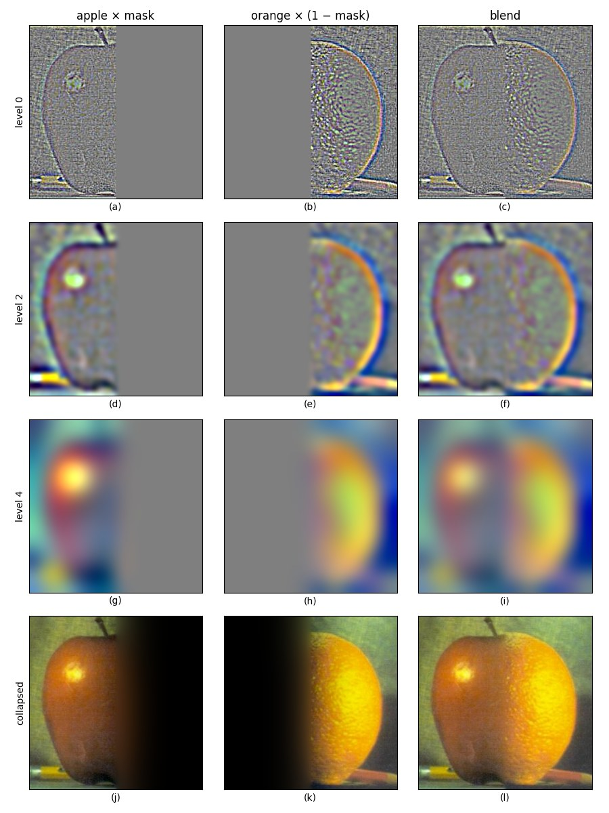
The same layout as the book: masked apple, masked orange and their sum at Laplacian levels 0, 2 and 4, and each column collapsed in the last row. The high bands (a, b) cut off sharply at the centre and the low bands (g, h) overlap over a wide zone. The two fades in (j) and (k) are complementary, so they add up to the full oraple in (l).
08
Multiresolution blending
Both blends reuse the stacks from the oraple in 07. Each Laplacian level of the two images is mixed with the matching level of the mask's Gaussian stack, then everything is summed. Before blending, one image is placed, scaled or cropped into the other's frame so the parts that meet actually line up.
Irregular mask: a volcano swallowing the sun
I cut the volcano out of a night eruption photo and set it into a sunset over the sea, with the summit on the sun so the crater looks like it is eating it.
- The flanks are straight lines fitted to an automatic rock edge. A pixel counts as rock when red clearly beats blue or it is dark, which keeps the pink lava trails in the sky out.
- The crater rim is traced by hand, since the eruption glow can't be thresholded. The outline is then pulled 14 px into the rock to drop a pale rim of backlit sky.
- The sunset is upscaled 2× and the volcano scaled by 0.74, with the summit placed 25 px above the sun's centre. Level with the centre, the sun just sat on the peak; 25 px up, the crater hides its lower half. The flanks also cover the sun's reflection in the water.
Fig. 22 · Inputs: the traced volcano and the sunset
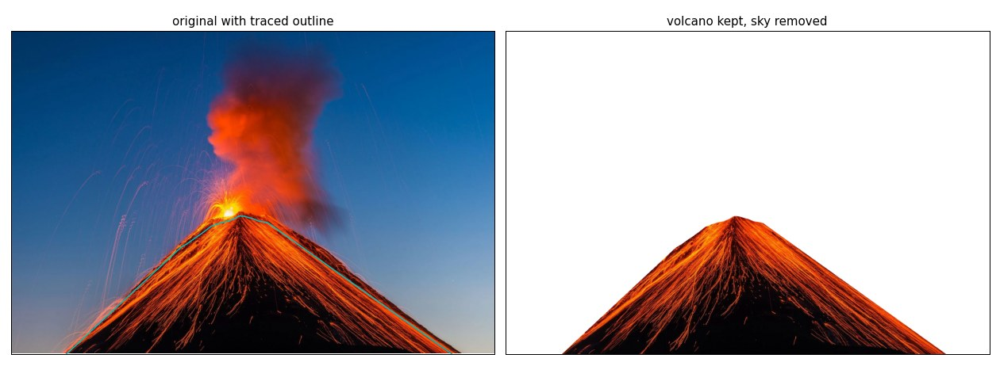
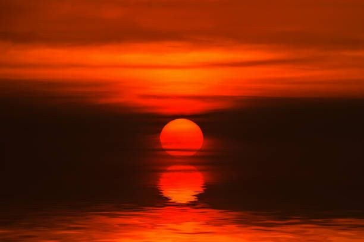
Two things made it smooth. First, I replaced the volcano photo's own sky with the sunset before blending. The coarse levels of the mask reach well past the outline, and the blue sky had leaked through as a pale haze along both flanks. Second, I kept the transition narrow. A wide one (7 levels, σ0 = 2, about 74 px) spread the volcano's dark tones into the sun and turned the rim to haze, worse than a plain paste. A volcano in front of the sun is an occlusion edge that should stay crisp, so I used 4 levels, σ0 = 1 and a 1.5 px feather: enough to remove fringes and pixel steps, not enough to blur.
Fig. 23 · Hard cut and blend
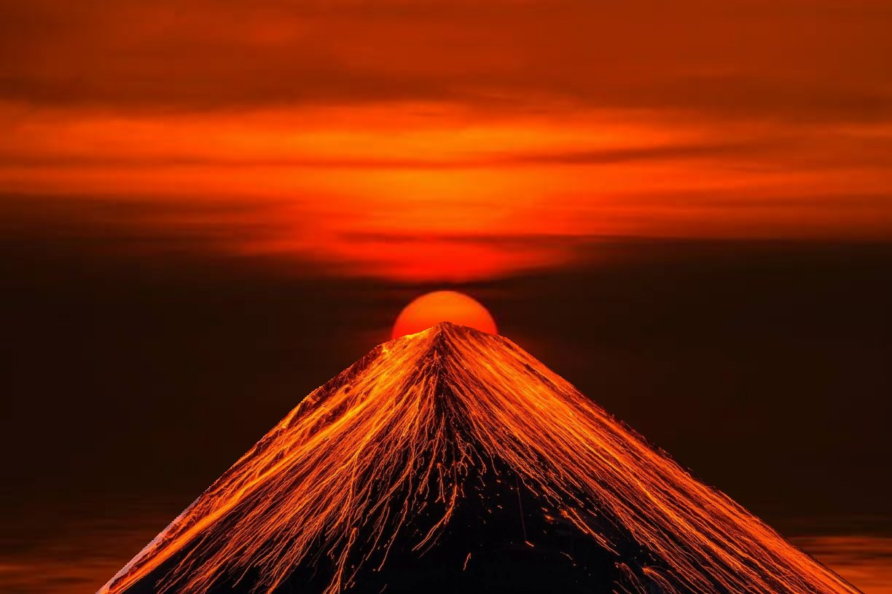
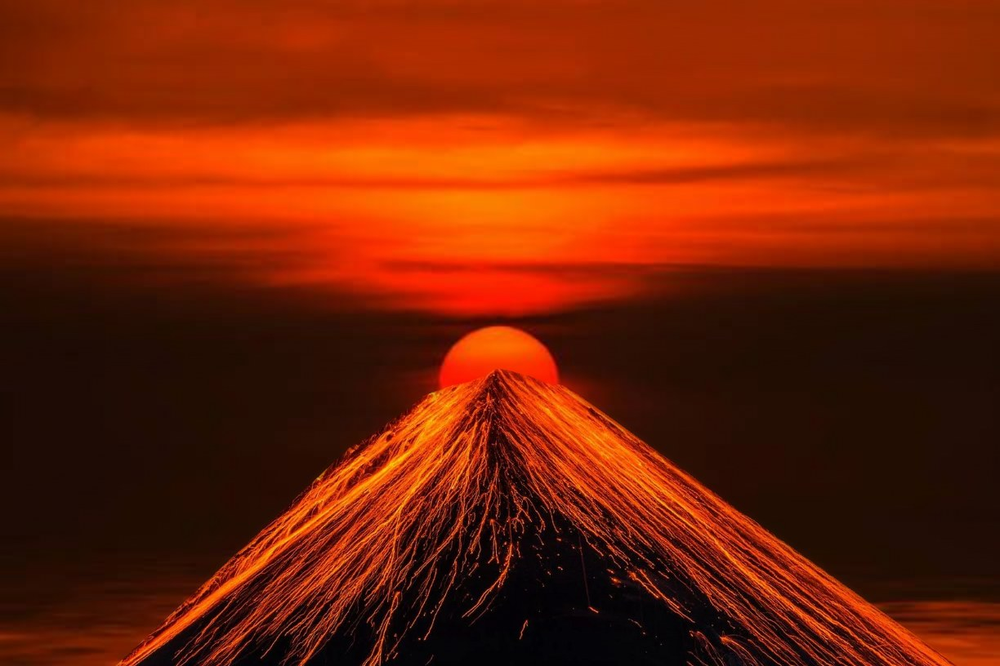
The plain paste shows what the pipeline removes: a yellow and pink fringe of eruption glow along the crater, a stair-stepped edge against the sun, and a pale strip of the original blue sky down the left flank. The blend keeps the rim just as crisp but clean. What still gives it away is the lighting: the lava is lit from within and far sharper than the hazy sunset.
Irregular mask: fingerprints for tree rings
In a photo of stacked logs I replaced the growth rings with a fingerprint, so each log looks like it grew a whorl. The bark and the pale sapwood band stay real, and inside, the original rings still show faintly through the print.
- Touching logs merge under colour thresholding, so I fitted an ellipse to each of the 11 visible faces by eye and marked its pith, which is often off-centre.
- For each face the print is scaled so its whorl sits on the pith and it reaches the far edge of the face. Each copy is rotated differently so they don't all point the same way.
- A black print on wood reads as ink, so I tinted it with each log's own blurred wood colour. Ridges get a darker, warmer version of that colour, like the real latewood bands.
- The mask is radial per face: full inside half the radius and fading to zero at 80%, so the outer rim is always the real photo. It peaks at 0.75, not 1, which keeps the cracks and a trace of the rings visible over the print.
Fig. 24 · Inputs, the fitted print, and the mask
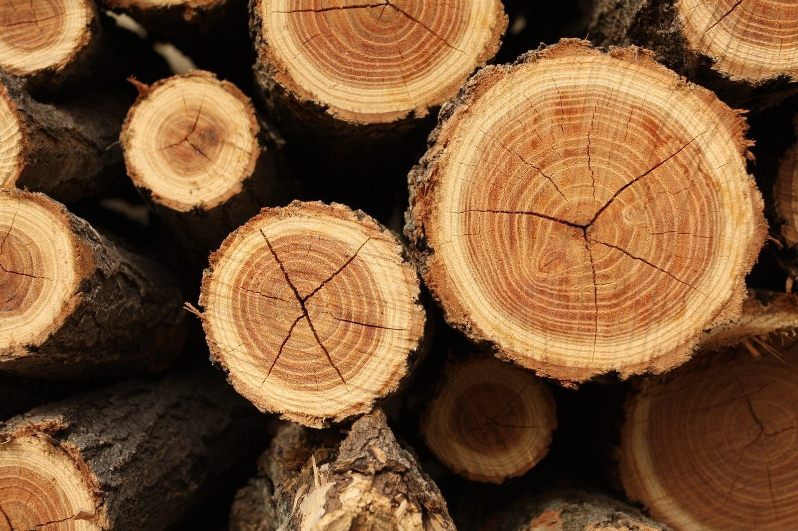
Fig. 25 · Hard cut and blend
The plain paste stamps a disc on each log with a visible border, and covers the real cracks. Blended, the print fades into the real rings over the outer third of each face, and the colours match because it was tinted with the wood itself. Up close the ridges still have the texture of an ink print, and in the two shaded logs at the bottom the print is darker and harder to see.
Process: the Laplacian stacks
Fig. 26 · Laplacian levels and collapsed, laid out like Szeliski Figure 3.42
Volcano: at every level the sun's rim (b, e, h) is cut along the crater and the lava streaks (a, d, g) stop at the outline; with 4 levels the widest transition is under 10 px, so the collapsed halves (j, k) meet on a clean line.
Logs: at level 2, the scale of the ridges and rings themselves, the print (d) dominates the middle of each face while the real rings (e) take over towards the rim. By level 4 only broad shading is left, and the collapsed inputs (j, k) fade into each other.
Bells and whistles: colour
Fig. 27 · Blending in grey and in colour
For the volcano, grey mostly kills the effect: the sun becomes a grey disc and the lava just light lines on a dark cone. The trick works because the lava and the sunset are the same orange, and blending each channel lets that orange run continuously from the lava into the sun.
For the logs, grey makes the print look like a separate layer on top of the wood, since brightness is all there is to compare. In colour the ridges share the reddish brown of the real latewood, which is most of what makes them read as part of the tree.
09
What I learned
Almost every part of this project came down to the same Gaussian filter, used in different ways. It smoothed the cameraman before differentiating, its complement sharpened the Taj Mahal, one of each made a hybrid, and a stack of them did the blending. What changed from part to part was only the decision about which frequencies should end up where.
What surprised me was how much of that decision is about perception rather than maths. Unsharp masking doesn't recover any lost detail, and my blur-then-sharpen test showed that, yet the result still looks sharper. A hybrid image is one fixed grid of pixels that turns into a different picture depending on how far away you stand. And a blend only looked seamless when the width of its transition matched what it was joining. The volcano's outline against the sun needed just a few pixels; when I widened it to make things smoother, it turned to haze and looked worse than a plain paste. The fingerprint, which had to dissolve into the wood, needed to fade over a third of each log.
I started out thinking of an image as a grid of pixels. I now think of it as a set of scales, each of which the eye reads differently.